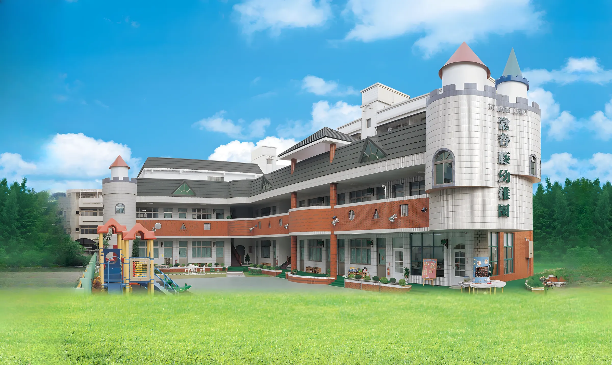
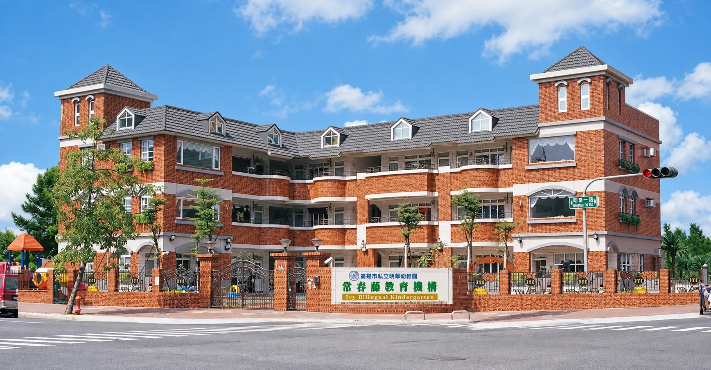
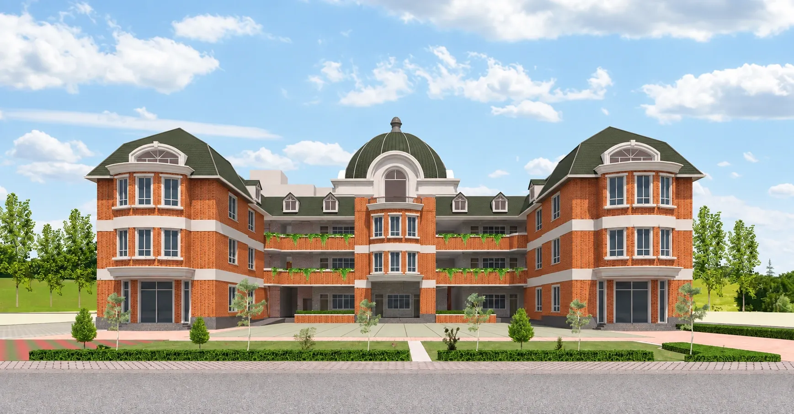
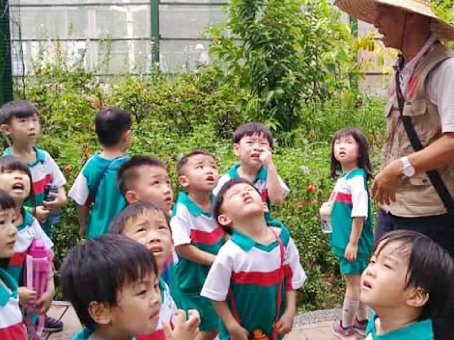
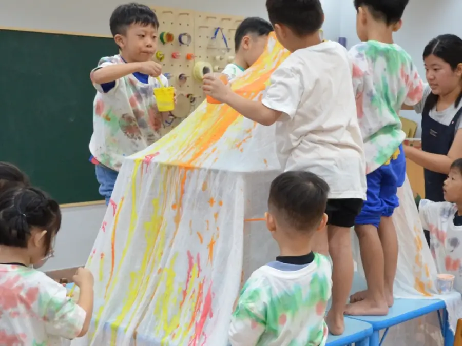
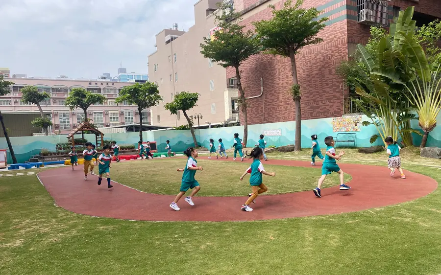

<title>常春藤 30 週年・磅礴版</title>
<meta name="claude:viewport-fit-sides" content="cover">
<meta name="description" content="常春藤 30 週年分頁 mock-up：鑽進巨大的 30、橫走 1997 到 2027、五校同框、照片牆拉遠、校徽升起。">
<script>(() => { const r = document.documentElement; r.lang = 'zh-Hant'; const m = !matchMedia('(prefers-reduced-motion: reduce)').matches; r.classList.toggle('motion', m); r.classList.toggle('wide', m && matchMedia('(min-width: 900px) and (min-height: 520px)').matches) })()</script>
<style>
/*fonts:start*/
@font-face{font-family:'LINE Seed TW';font-weight:700;font-display:swap;src:url(media/fonts/lineseed-bd-001-f084200a47c7.woff2) format('woff2');unicode-range:U+2C,U+30-39,U+41,U+43-45,U+49,U+4C,U+4E-4F,U+53-56,U+59,U+B7,U+2013,U+3001,U+300C-300D,U+FF01,U+FF08-FF09,U+FF1F}
@font-face{font-family:'LINE Seed TW';font-weight:700;font-display:swap;src:url(media/fonts/lineseed-bd-002-1ada5b9430d3.woff2) format('woff2');unicode-range:U+4E09,U+4E0D,U+4E5F,U+4E86,U+4E8B,U+4E94,U+4F5C,U+4F60,U+500B,U+51FA,U+5230,U+53CB,U+54C1,U+591A,U+5927,U+5947,U+597D,U+5B78,U+5C0F,U+5DF1,U+5E36,U+5E74,U+5F97,U+5FC3,U+606F,U+60F3,U+6240,U+628A,U+653E,U+6559,U+662F,U+670B,U+671F,U+69CB,U+6A5F,U+6CD5,U+751F,U+770B,U+7B2C,U+80B2,U+81EA,U+8981,U+8D77,U+8FD1,U+9593,U+9EBC,U+9F13}
@font-face{font-family:'LINE Seed TW';font-weight:700;font-display:swap;src:url(media/fonts/lineseed-bd-003-81bc9c37fb7c.woff2) format('woff2');unicode-range:U+4E2D,U+4E8C,U+4EBA,U+5152,U+5168,U+516D,U+529B,U+5341,U+5411,U+5B9A,U+5E2B,U+5E7C,U+6574,U+6642,U+6B72,U+73ED,U+77E5,U+7A0B,U+7D20,U+7FD2,U+8001,U+80FD,U+8207,U+966A,U+990A}
@font-face{font-family:'LINE Seed TW';font-weight:700;font-display:swap;src:url(media/fonts/lineseed-bd-005-e7085ce00a56.woff2) format('woff2');unicode-range:U+4E01,U+5167,U+52D5,U+5BB9,U+5F62,U+610F,U+624B,U+6253,U+6700,U+6D3B,U+6D88,U+72C0,U+793A,U+7A2E,U+7A7A,U+843D,U+88E1,U+89AA,U+89D2,U+8A66,U+8B93}
@font-face{font-family:'LINE Seed TW';font-weight:700;font-display:swap;src:url(media/fonts/lineseed-bd-006-073ba5726c2e.woff2) format('woff2');unicode-range:U+5148,U+53C3,U+54EA,U+7D04,U+8457,U+89C0,U+9810}
@font-face{font-family:'LINE Seed TW';font-weight:700;font-display:swap;src:url(media/fonts/lineseed-bd-007-dfbb819ccfcd.woff2) format('woff2');unicode-range:U+5FEB,U+6A02,U+6EFF,U+9031}
@font-face{font-family:'LINE Seed TW';font-weight:700;font-display:swap;src:url(media/fonts/lineseed-bd-009-e76a10fb61f7.woff2) format('woff2');unicode-range:U+4F55,U+4FDD,U+5165,U+518A,U+5206,U+524D,U+52A9,U+540D,U+5831,U+5BF6,U+5C0D-5C0E,U+5C31,U+5EA6,U+61C9,U+63A5,U+6536,U+66F2,U+695A,U+6B21,U+6D25,U+6D41,U+6E05,U+7167,U+7559,U+79C1,U+7A7F,U+7ACB,U+7AE0,U+84CB,U+88DC,U+898F,U+8A3B,U+8C9D,U+8CBB-8CBC,U+8FA6,U+9000-9001,U+9069,U+90E8,U+96FB,U+9808,U+984D,U+9996}
@font-face{font-family:'LINE Seed TW';font-weight:700;font-display:swap;src:url(media/fonts/lineseed-bd-010-6f0cc3ffedf1.woff2) format('woff2');unicode-range:U+5340,U+5439,U+5C71,U+5DE6,U+5E6B,U+62FC,U+63DB,U+6C11,U+71DF,U+71ED,U+756B,U+881F,U+9CF3}
@font-face{font-family:'LINE Seed TW';font-weight:700;font-display:swap;src:url(media/fonts/lineseed-bd-013-929fac5b3a0a.woff2) format('woff2');unicode-range:U+21-2B,U+2D-2F,U+3A-40,U+42,U+46-48,U+4A-4B,U+4D,U+50-52,U+57-58,U+5A-7E,U+A9,U+2026,U+25CB,U+25CF,U+4E26,U+4E4B,U+4E9B,U+4EA4,U+4EAB,U+4ECB,U+4ED6,U+4EE3,U+4EE5,U+4EFB,U+4EFD,U+4F4D,U+4F9B,U+4F9D,U+4FBF,U+5065,U+50B3,U+50CF,U+50F9,U+5176,U+518D,U+5305,U+5373,U+539F,U+53CA,U+53D6-53D7,U+53E3,U+53EA,U+53EF-53F0,U+5404,U+5408,U+540C,U+554F,U+55AE,U+56DE,U+5716,U+5730,U+578B,U+5834,U+5916,U+5982,U+5B57,U+5BE6,U+5C07-5C08,U+5C0B,U+5C1A,U+5C55,U+5DF2,U+5E02,U+5E73,U+5EB7,U+5EE3,U+5EFA,U+5F35,U+5F88,U+5F8C,U+5FC5,U+6027,U+60C5,U+611F,U+6216,U+6232,U+624D,U+6307,U+6392,U+63D0,U+6539,U+6599,U+6613,U+66F4,U+66F8,U+6708,U+672A,U+672C,U+6771,U+679C,U+67E5,U+689D,U+696D,U+6A19,U+6B63-6B64,U+6C23,U+6C34,U+6C92,U+7121,U+71B1,U+7247,U+7269,U+7279,U+7528,U+7576,U+76EE,U+7AD9,U+7B49,U+7CBE,U+7D50,U+7D61,U+7DB2,U+7DDA,U+806F,U+8272,U+865F,U+884C,U+8868,U+8A08,U+8A18,U+8A2D,U+8A71,U+8ACB,U+8CC7,U+8EAB,U+8ECA,U+901A,U+904A,U+904E,U+9053,U+9078,U+9084,U+982D,U+984C,U+9AD4,U+9AD8,U+9EDE,U+FF0B,U+FF1A-FF1B,U+FF5C}
@font-face{font-family:'LINE Seed TW';font-weight:700;font-display:swap;src:url(media/fonts/lineseed-bd-014-45b45e8b0d42.woff2) format('woff2');unicode-range:U+4EAE,U+4F4F,U+4F8B,U+4FC2,U+4FEE,U+5019,U+503C,U+505C,U+50C5,U+5178,U+521D,U+5236,U+525B,U+53E6,U+5426,U+5462,U+5468,U+555F,U+55CE,U+570D,U+57CE,U+5883,U+5ABD,U+5B58,U+5B98,U+5BA4,U+5BEB,U+5C64,U+5E03,U+5EAD,U+5F15,U+5F80,U+5F85,U+5FAE,U+5FF5,U+6236,U+62DB,U+63A7,U+642D,U+64AD,U+64C7,U+6545,U+666F,U+6750,U+677F,U+67B6,U+6848,U+6A21,U+6AA2,U+6B50,U+6BD4,U+6C42,U+6C7A,U+6CC1,U+6D17,U+6DF1,U+6EAB,U+700F,U+7136,U+7368,U+7403,U+74B0,U+7531,U+76F4,U+773C,U+78BA,U+78BC,U+795E,U+79AE,U+7A31,U+7A4D,U+7BC0,U+7D00,U+7D30,U+7D39,U+7D44,U+7D66,U+7DAD,U+7E8C,U+7F6E,U+8003,U+800C,U+8072,U+807D,U+81F3,U+8208,U+82E5,U+85CF,U+8655,U+88AB,U+88DD,U+897F,U+89BD,U+89E3,U+8A55,U+8A62,U+8A72,U+8ABF,U+8AD6,U+8B77,U+8B8A,U+8DA3,U+8DDF,U+8F03,U+8FCE,U+900F,U+9054,U+908A,U+90A3,U+914D,U+91CF,U+9304,U+932F,U+9375,U+9664,U+9673,U+96C4,U+96E2,U+97F3,U+98DF,U+9910,U+9ED1}
@font-face{font-family:'LINE Seed TW';font-weight:700;font-display:swap;src:url(media/fonts/lineseed-bd-015-5fb94c8515f3.woff2) format('woff2');unicode-range:U+4E92,U+4EAC,U+4F30,U+4F34,U+5074,U+50BE,U+5132,U+5192,U+51E1,U+523B,U+526A,U+5283,U+52C7,U+5348,U+5354,U+5409,U+5448,U+547C,U+5617,U+5708,U+5821,U+586B,U+590F,U+594F,U+5954,U+5B88,U+5BDF,U+5C01,U+5C4F,U+5ECA,U+5F48,U+5FFD,U+6025,U+6089,U+61B6,U+61C2,U+62B1,U+62D6,U+62FE,U+6478,U+64A5,U+654F,U+6562,U+65BD,U+66A8,U+66AB,U+66F3,U+66FF,U+679D,U+67D4,U+684C,U+68AF,U+6905,U+690D,U+6AC3,U+6B32,U+6B8A,U+6E2C,U+6E9C-6E9D,U+6ED1,U+708E,U+719F,U+7562,U+7565,U+775B,U+7761,U+79FB,U+7A0D,U+7B11,U+7B54,U+7BC4,U+7D0B,U+7D0D,U+7D2F,U+7DA0,U+7E2E,U+7E5E,U+7E6B,U+7E7C,U+800D,U+8010,U+8015,U+8046,U+804A,U+81F4,U+820D,U+821E,U+8349,U+8449,U+8907,U+89F8,U+8A0E,U+8A2A,U+8D9F,U+8DD1,U+8DDD,U+8DF3,U+8F38,U+8FD4,U+9072,U+9215,U+9583,U+9589,U+95CA,U+96AA,U+96E8,U+9760,U+978B,U+984F,U+9867,U+98F2,U+9A5F,U+9B27,U+9BAE,U+9F61}
@font-face{font-family:'LINE Seed TW';font-weight:700;font-display:swap;src:url(media/fonts/lineseed-bd-016-9cb295d2bf7b.woff2) format('woff2');unicode-range:U+A7,U+AE,U+2014-2016,U+2018-2019,U+201C-201D,U+2025,U+2027,U+2032,U+2035,U+203B,U+203E,U+2122,U+3003,U+3008-300B,U+300E-3011,U+3014-3015,U+301C-301E,U+3113-3114,U+3118,U+311A-3129,U+4E14,U+4E9E,U+4EE4,U+4F46,U+4F4E,U+4F73,U+5047,U+512A,U+5149,U+514B,U+514D,U+5169,U+516C,U+520A,U+5217,U+5229,U+5247,U+529F-52A0,U+52D9,U+5317,U+5343,U+5347,U+534A,U+5357,U+5361,U+5370,U+53BB,U+53CD,U+53E4,U+53F2,U+53F8,U+5403,U+5427,U+5473,U+54E1,U+552E,U+5546,U+5668,U+56E0,U+5718,U+5740,U+57FA,U+589E,U+58EB,U+592A,U+5931,U+5973,U+5A1B,U+5BA2,U+5BC6,U+5BCC,U+5C11,U+5C45,U+5C6C,U+5DE5,U+5DF4,U+5E33,U+5E7E,U+5E8F,U+5E95,U+5E97,U+5EA7,U+5F37,U+5F69,U+601D,U+60A8,U+60E0,U+614B,U+6230,U+623F,U+6280,U+6295,U+62C9,U+62CD,U+6301,U+6309,U+63A8,U+641C,U+64CA,U+64DA,U+652F,U+653F,U+6548,U+6578,U+65C5,U+661F,U+662D,U+670D,U+6797,U+682A,U+683C,U+6B0A,U+6B3E,U+6CBB,U+6D77,U+6E2F,U+7063,U+7248,U+738B,U+7522,U+7537,U+767B,U+767D-767E,U+771F,U+793E,U+79D1,U+7BA1,U+7C21,U+7CFB,U+7D05,U+7D1A,U+7D93,U+7DE8,U+7E3D,U+8005,U+805E,U+82B1,U+82F1,U+842C,U+85A6,U+88FD,U+8A00,U+8A02,U+8A0A,U+8A9E,U+8B49,U+8CB7,U+8CE3,U+8CEA,U+8CFC,U+8D85,U+8F09,U+8F49,U+901F-9020,U+9023,U+904B,U+91D1,U+9580,U+9650,U+96B1,U+96C6,U+975E,U+985E,U+98A8,U+9999,U+99AC,U+9A57,U+FE30-FE31,U+FE33-FE44,U+FE49-FE52,U+FE54-FE57,U+FE59-FE61,U+FE63,U+FE68,U+FE6A-FE6B,U+FF02-FF03,U+FF05-FF07,U+FF0A,U+FF0D-FF0F,U+FF20,U+FF3B-FF3D,U+FF3F,U+FF5B,U+FF5D}
@font-face{font-family:'LINE Seed TW';font-weight:700;font-display:swap;src:url(media/fonts/lineseed-bd-028-f8bfafd4f975.woff2) format('woff2');unicode-range:U+2103,U+25A0,U+266A,U+4F10,U+4F6C,U+4F70,U+4FCF,U+5006,U+50D1,U+51F0,U+51F6,U+51F9,U+5256,U+525D,U+52C9,U+5349,U+5351,U+5375,U+53DB,U+6577,U+65AC,U+6602,U+6652,U+66F9,U+672D,U+683D,U+68AD,U+68B5,U+68DA,U+68E7,U+6A59,U+6A61,U+6AE5,U+6B47,U+6BEF,U+6C50,U+6C9B,U+6E23,U+6E34,U+6E4A,U+6E67,U+6EA2,U+6EB6,U+6F20,U+6FEB,U+7149,U+714C,U+715E,U+7199,U+71AC,U+7262,U+7409,U+745F,U+7469,U+7504,U+753A,U+75F4,U+7682,U+76BA,U+76F2,U+77FD,U+780D,U+7832,U+78C5,U+78EF,U+7901,U+79BE,U+79C9,U+79E6,U+7A1A,U+7A84,U+7ACA,U+7CB5,U+7CB9,U+7CDF,U+7CE7,U+7D6E,U+7DB1,U+7DEF,U+7E61,U+7E7D,U+7E8F,U+7F38,U+7F77,U+7FA8,U+7FC5,U+7FE1,U+7FF9,U+80A2,U+80AA,U+80BA,U+814E,U+8180,U+819D,U+81C0,U+828B,U+82AD,U+82AF,U+83F1,U+83F8,U+8403,U+8475,U+84BC,U+84C9,U+84EC,U+8523,U+8569,U+8591,U+85B0,U+86D9,U+8774,U+884D,U+88D4,U+8A60,U+8A79,U+8B19,U+8C79,U+8CC8,U+8E10,U+8E48,U+8FAF,U+9017,U+9175,U+9187,U+918B,U+91D8,U+9214,U+946B,U+9470,U+9640,U+9675,U+96EF,U+9716,U+97CB,U+985B,U+99B3,U+9B4F,U+9D09,U+9E9F,U+9EDB,U+9F90,U+FF14}
@font-face{font-family:'LINE Seed TW';font-weight:700;font-display:swap;src:url(media/fonts/lineseed-bd-035-8b5d6b9d3104.woff2) format('woff2');unicode-range:U+A2,U+A8,U+AF,U+B1,U+2C7,U+2C9,U+2CD,U+2105,U+2109,U+2116,U+2121,U+2196-2197,U+2199,U+2212,U+2215,U+221A,U+221E-2220,U+2225,U+2229-222B,U+222E,U+2234-2235,U+2260-2261,U+2295,U+2299,U+22A5,U+22BF,U+2460-2469,U+2474-247D,U+2501,U+250C,U+2510,U+2514,U+2518,U+251C-251D,U+2524,U+252C,U+2534,U+253C,U+2550-2570,U+2572,U+2574,U+2581-258A,U+258C-258F,U+2593-2595,U+25A1,U+25BD,U+25C7,U+25E2-25E5,U+263A,U+2642,U+2660,U+2663-2664,U+2667-2668,U+273D,U+3005-3007,U+3012,U+3021-3025,U+3041,U+3043,U+3045,U+3047,U+3049,U+3052,U+305C,U+3062,U+306D,U+307A,U+307C,U+3080,U+308E,U+3090-3091,U+309D-309E,U+30A5,U+30C2,U+30C5,U+30EE,U+30F0-30F2,U+30F4-30F6,U+30FD-30FE,U+3105-3106,U+3108,U+310A-310B,U+310D-3112,U+3115-3117,U+3119,U+32A3,U+338E-338F,U+339C-339E,U+33A1,U+33C4,U+33D1-33D2,U+4E0C,U+4E0F-4E10,U+4E15,U+4E31,U+4E36,U+4E3F,U+4E42,U+4E47,U+4E52-4E53,U+4E69,U+4E85,U+4E8D,U+4E93,U+4E99,U+4E9F-4EA0,U+7396,U+745B,U+746F,U+748B,U+7647,U+7699,U+76BF,U+76CE,U+76DE,U+77AA,U+786B,U+7881,U+78CA,U+797A,U+79B9,U+79BB,U+79BF,U+7A92,U+7AC7,U+7AE3,U+7B19,U+7B20,U+7B51,U+7B94,U+7CBD,U+7CDE,U+7CEF,U+7D46,U+7DDE,U+7F88,U+80DA,U+814B,U+81CD,U+8235,U+8258,U+82B9,U+846B,U+84C1,U+84D3,U+8518,U+8611,U+8783,U+8814,U+8A15,U+8AA6,U+8B2C,U+8D05,U+8DBE,U+8E34,U+8E66,U+8EC0,U+9005,U+9082,U+9091,U+914B,U+916F,U+92C5,U+92F0,U+9318,U+9382,U+938A,U+93E2,U+964B,U+96C1,U+96CC-96CD,U+96DB,U+973E,U+97A0,U+9803,U+9955,U+99F1,U+9A5B,U+9ABC,U+9C57,U+9D1B,U+9D26,U+9D51,U+9EEF,U+FF25,U+FF2D-FF2E,U+FF34,U+FFE5}
@font-face{font-family:'LINE Seed TW';font-weight:700;font-display:swap;src:url(media/fonts/lineseed-bd-critical-87586e9e5522.woff2) format('woff2');unicode-range:U+3002,U+4E00,U+4E0A-4E0B,U+4EC1,U+4F86,U+5011,U+570B,U+5712,U+5728,U+5929,U+59CB,U+5B50,U+5B69,U+5D07,U+5E38,U+5F9E,U+5FB7,U+6210-6211,U+63A2,U+65B0,U+65BC,U+65E5,U+660E,U+6625,U+6709,U+677E,U+6821,U+6B66,U+6BB5,U+6BCF,U+73FE,U+767C,U+7684,U+7D22,U+7FA9,U+83EF,U+85E4,U+898B,U+8A8D,U+8B58,U+8D70,U+8DEF,U+9032,U+9047,U+90FD,U+9577,U+958B,U+95DC,U+969B,U+9CE5,U+FF0C}
@font-face{font-family:'LINE Seed TW';font-weight:800;font-display:swap;src:url(media/fonts/lineseed-eb-001-b99b9a711a03.woff2) format('woff2');unicode-range:U+2C,U+30-39,U+41,U+43-45,U+49,U+4C,U+4E-4F,U+53-56,U+59,U+B7,U+2013,U+3001,U+300C-300D,U+FF01,U+FF08-FF09,U+FF1F}
@font-face{font-family:'LINE Seed TW';font-weight:800;font-display:swap;src:url(media/fonts/lineseed-eb-002-215de535677d.woff2) format('woff2');unicode-range:U+4E09,U+4E0D,U+4E5F,U+4E86,U+4E8B,U+4E94,U+4F5C,U+4F60,U+500B,U+51FA,U+5230,U+53CB,U+54C1,U+591A,U+5927,U+5947,U+597D,U+5B78,U+5C0F,U+5DF1,U+5E36,U+5E74,U+5F97,U+5FC3,U+606F,U+60F3,U+6240,U+628A,U+653E,U+6559,U+662F,U+670B,U+671F,U+69CB,U+6A5F,U+6CD5,U+751F,U+770B,U+7B2C,U+80B2,U+81EA,U+8981,U+8D77,U+8FD1,U+9593,U+9EBC,U+9F13}
@font-face{font-family:'LINE Seed TW';font-weight:800;font-display:swap;src:url(media/fonts/lineseed-eb-003-af1b51c51ed8.woff2) format('woff2');unicode-range:U+4E2D,U+4E8C,U+4EBA,U+5152,U+5168,U+516D,U+529B,U+5341,U+5411,U+5B9A,U+5E2B,U+5E7C,U+6574,U+6642,U+6B72,U+73ED,U+77E5,U+7A0B,U+7D20,U+7FD2,U+8001,U+80FD,U+8207,U+966A,U+990A}
@font-face{font-family:'LINE Seed TW';font-weight:800;font-display:swap;src:url(media/fonts/lineseed-eb-005-7195324422f0.woff2) format('woff2');unicode-range:U+4E01,U+5167,U+52D5,U+5BB9,U+5F62,U+610F,U+624B,U+6253,U+6700,U+6D3B,U+6D88,U+72C0,U+793A,U+7A2E,U+7A7A,U+843D,U+88E1,U+89AA,U+89D2,U+8A66,U+8B93}
@font-face{font-family:'LINE Seed TW';font-weight:800;font-display:swap;src:url(media/fonts/lineseed-eb-006-a66fee7596cb.woff2) format('woff2');unicode-range:U+5148,U+53C3,U+54EA,U+7D04,U+8457,U+89C0,U+9810}
@font-face{font-family:'LINE Seed TW';font-weight:800;font-display:swap;src:url(media/fonts/lineseed-eb-007-e25b0beea4c5.woff2) format('woff2');unicode-range:U+5FEB,U+6A02,U+6EFF,U+9031}
@font-face{font-family:'LINE Seed TW';font-weight:800;font-display:swap;src:url(media/fonts/lineseed-eb-009-f6846474986e.woff2) format('woff2');unicode-range:U+4F55,U+4FDD,U+5165,U+518A,U+5206,U+524D,U+52A9,U+540D,U+5831,U+5BF6,U+5C0D-5C0E,U+5C31,U+5EA6,U+61C9,U+63A5,U+6536,U+66F2,U+695A,U+6B21,U+6D25,U+6D41,U+6E05,U+7167,U+7559,U+79C1,U+7A7F,U+7ACB,U+7AE0,U+84CB,U+88DC,U+898F,U+8A3B,U+8C9D,U+8CBB-8CBC,U+8FA6,U+9000-9001,U+9069,U+90E8,U+96FB,U+9808,U+984D,U+9996}
@font-face{font-family:'LINE Seed TW';font-weight:800;font-display:swap;src:url(media/fonts/lineseed-eb-010-33f67d94d04a.woff2) format('woff2');unicode-range:U+5340,U+5439,U+5C71,U+5DE6,U+5E6B,U+62FC,U+63DB,U+6C11,U+71DF,U+71ED,U+756B,U+881F,U+9CF3}
@font-face{font-family:'LINE Seed TW';font-weight:800;font-display:swap;src:url(media/fonts/lineseed-eb-013-f4cab973570a.woff2) format('woff2');unicode-range:U+21-2B,U+2D-2F,U+3A-40,U+42,U+46-48,U+4A-4B,U+4D,U+50-52,U+57-58,U+5A-7E,U+A9,U+2026,U+25CB,U+25CF,U+4E26,U+4E4B,U+4E9B,U+4EA4,U+4EAB,U+4ECB,U+4ED6,U+4EE3,U+4EE5,U+4EFB,U+4EFD,U+4F4D,U+4F9B,U+4F9D,U+4FBF,U+5065,U+50B3,U+50CF,U+50F9,U+5176,U+518D,U+5305,U+5373,U+539F,U+53CA,U+53D6-53D7,U+53E3,U+53EA,U+53EF-53F0,U+5404,U+5408,U+540C,U+554F,U+55AE,U+56DE,U+5716,U+5730,U+578B,U+5834,U+5916,U+5982,U+5B57,U+5BE6,U+5C07-5C08,U+5C0B,U+5C1A,U+5C55,U+5DF2,U+5E02,U+5E73,U+5EB7,U+5EE3,U+5EFA,U+5F35,U+5F88,U+5F8C,U+5FC5,U+6027,U+60C5,U+611F,U+6216,U+6232,U+624D,U+6307,U+6392,U+63D0,U+6539,U+6599,U+6613,U+66F4,U+66F8,U+6708,U+672A,U+672C,U+6771,U+679C,U+67E5,U+689D,U+696D,U+6A19,U+6B63-6B64,U+6C23,U+6C34,U+6C92,U+7121,U+71B1,U+7247,U+7269,U+7279,U+7528,U+7576,U+76EE,U+7AD9,U+7B49,U+7CBE,U+7D50,U+7D61,U+7DB2,U+7DDA,U+806F,U+8272,U+865F,U+884C,U+8868,U+8A08,U+8A18,U+8A2D,U+8A71,U+8ACB,U+8CC7,U+8EAB,U+8ECA,U+901A,U+904A,U+904E,U+9053,U+9078,U+9084,U+982D,U+984C,U+9AD4,U+9AD8,U+9EDE,U+FF0B,U+FF1A-FF1B,U+FF5C}
@font-face{font-family:'LINE Seed TW';font-weight:800;font-display:swap;src:url(media/fonts/lineseed-eb-014-b6278cbc256f.woff2) format('woff2');unicode-range:U+4EAE,U+4F4F,U+4F8B,U+4FC2,U+4FEE,U+5019,U+503C,U+505C,U+50C5,U+5178,U+521D,U+5236,U+525B,U+53E6,U+5426,U+5462,U+5468,U+555F,U+55CE,U+570D,U+57CE,U+5883,U+5ABD,U+5B58,U+5B98,U+5BA4,U+5BEB,U+5C64,U+5E03,U+5EAD,U+5F15,U+5F80,U+5F85,U+5FAE,U+5FF5,U+6236,U+62DB,U+63A7,U+642D,U+64AD,U+64C7,U+6545,U+666F,U+6750,U+677F,U+67B6,U+6848,U+6A21,U+6AA2,U+6B50,U+6BD4,U+6C42,U+6C7A,U+6CC1,U+6D17,U+6DF1,U+6EAB,U+700F,U+7136,U+7368,U+7403,U+74B0,U+7531,U+76F4,U+773C,U+78BA,U+78BC,U+795E,U+79AE,U+7A31,U+7A4D,U+7BC0,U+7D00,U+7D30,U+7D39,U+7D44,U+7D66,U+7DAD,U+7E8C,U+7F6E,U+8003,U+800C,U+8072,U+807D,U+81F3,U+8208,U+82E5,U+85CF,U+8655,U+88AB,U+88DD,U+897F,U+89BD,U+89E3,U+8A55,U+8A62,U+8A72,U+8ABF,U+8AD6,U+8B77,U+8B8A,U+8DA3,U+8DDF,U+8F03,U+8FCE,U+900F,U+9054,U+908A,U+90A3,U+914D,U+91CF,U+9304,U+932F,U+9375,U+9664,U+9673,U+96C4,U+96E2,U+97F3,U+98DF,U+9910,U+9ED1}
@font-face{font-family:'LINE Seed TW';font-weight:800;font-display:swap;src:url(media/fonts/lineseed-eb-015-cd5db3231259.woff2) format('woff2');unicode-range:U+4E92,U+4EAC,U+4F30,U+4F34,U+5074,U+50BE,U+5132,U+5192,U+51E1,U+523B,U+526A,U+5283,U+52C7,U+5348,U+5354,U+5409,U+5448,U+547C,U+5617,U+5708,U+5821,U+586B,U+590F,U+594F,U+5954,U+5B88,U+5BDF,U+5C01,U+5C4F,U+5ECA,U+5F48,U+5FFD,U+6025,U+6089,U+61B6,U+61C2,U+62B1,U+62D6,U+62FE,U+6478,U+64A5,U+654F,U+6562,U+65BD,U+66A8,U+66AB,U+66F3,U+66FF,U+679D,U+67D4,U+684C,U+68AF,U+6905,U+690D,U+6AC3,U+6B32,U+6B8A,U+6E2C,U+6E9C-6E9D,U+6ED1,U+708E,U+719F,U+7562,U+7565,U+775B,U+7761,U+79FB,U+7A0D,U+7B11,U+7B54,U+7BC4,U+7D0B,U+7D0D,U+7D2F,U+7DA0,U+7E2E,U+7E5E,U+7E6B,U+7E7C,U+800D,U+8010,U+8015,U+8046,U+804A,U+81F4,U+820D,U+821E,U+8349,U+8449,U+8907,U+89F8,U+8A0E,U+8A2A,U+8D9F,U+8DD1,U+8DDD,U+8DF3,U+8F38,U+8FD4,U+9072,U+9215,U+9583,U+9589,U+95CA,U+96AA,U+96E8,U+9760,U+978B,U+984F,U+9867,U+98F2,U+9A5F,U+9B27,U+9BAE,U+9F61}
@font-face{font-family:'LINE Seed TW';font-weight:800;font-display:swap;src:url(media/fonts/lineseed-eb-016-3e5686b7a2bc.woff2) format('woff2');unicode-range:U+A7,U+AE,U+2014-2016,U+2018-2019,U+201C-201D,U+2025,U+2027,U+2032,U+2035,U+203B,U+203E,U+2122,U+3003,U+3008-300B,U+300E-3011,U+3014-3015,U+301C-301E,U+3113-3114,U+3118,U+311A-3129,U+4E14,U+4E9E,U+4EE4,U+4F46,U+4F4E,U+4F73,U+5047,U+512A,U+5149,U+514B,U+514D,U+5169,U+516C,U+520A,U+5217,U+5229,U+5247,U+529F-52A0,U+52D9,U+5317,U+5343,U+5347,U+534A,U+5357,U+5361,U+5370,U+53BB,U+53CD,U+53E4,U+53F2,U+53F8,U+5403,U+5427,U+5473,U+54E1,U+552E,U+5546,U+5668,U+56E0,U+5718,U+5740,U+57FA,U+589E,U+58EB,U+592A,U+5931,U+5973,U+5A1B,U+5BA2,U+5BC6,U+5BCC,U+5C11,U+5C45,U+5C6C,U+5DE5,U+5DF4,U+5E33,U+5E7E,U+5E8F,U+5E95,U+5E97,U+5EA7,U+5F37,U+5F69,U+601D,U+60A8,U+60E0,U+614B,U+6230,U+623F,U+6280,U+6295,U+62C9,U+62CD,U+6301,U+6309,U+63A8,U+641C,U+64CA,U+64DA,U+652F,U+653F,U+6548,U+6578,U+65C5,U+661F,U+662D,U+670D,U+6797,U+682A,U+683C,U+6B0A,U+6B3E,U+6CBB,U+6D77,U+6E2F,U+7063,U+7248,U+738B,U+7522,U+7537,U+767B,U+767D-767E,U+771F,U+793E,U+79D1,U+7BA1,U+7C21,U+7CFB,U+7D05,U+7D1A,U+7D93,U+7DE8,U+7E3D,U+8005,U+805E,U+82B1,U+82F1,U+842C,U+85A6,U+88FD,U+8A00,U+8A02,U+8A0A,U+8A9E,U+8B49,U+8CB7,U+8CE3,U+8CEA,U+8CFC,U+8D85,U+8F09,U+8F49,U+901F-9020,U+9023,U+904B,U+91D1,U+9580,U+9650,U+96B1,U+96C6,U+975E,U+985E,U+98A8,U+9999,U+99AC,U+9A57,U+FE30-FE31,U+FE33-FE44,U+FE49-FE52,U+FE54-FE57,U+FE59-FE61,U+FE63,U+FE68,U+FE6A-FE6B,U+FF02-FF03,U+FF05-FF07,U+FF0A,U+FF0D-FF0F,U+FF20,U+FF3B-FF3D,U+FF3F,U+FF5B,U+FF5D}
@font-face{font-family:'LINE Seed TW';font-weight:800;font-display:swap;src:url(media/fonts/lineseed-eb-028-c435eb40668b.woff2) format('woff2');unicode-range:U+2103,U+25A0,U+266A,U+4F10,U+4F6C,U+4F70,U+4FCF,U+5006,U+50D1,U+51F0,U+51F6,U+51F9,U+5256,U+525D,U+52C9,U+5349,U+5351,U+5375,U+53DB,U+6577,U+65AC,U+6602,U+6652,U+66F9,U+672D,U+683D,U+68AD,U+68B5,U+68DA,U+68E7,U+6A59,U+6A61,U+6AE5,U+6B47,U+6BEF,U+6C50,U+6C9B,U+6E23,U+6E34,U+6E4A,U+6E67,U+6EA2,U+6EB6,U+6F20,U+6FEB,U+7149,U+714C,U+715E,U+7199,U+71AC,U+7262,U+7409,U+745F,U+7469,U+7504,U+753A,U+75F4,U+7682,U+76BA,U+76F2,U+77FD,U+780D,U+7832,U+78C5,U+78EF,U+7901,U+79BE,U+79C9,U+79E6,U+7A1A,U+7A84,U+7ACA,U+7CB5,U+7CB9,U+7CDF,U+7CE7,U+7D6E,U+7DB1,U+7DEF,U+7E61,U+7E7D,U+7E8F,U+7F38,U+7F77,U+7FA8,U+7FC5,U+7FE1,U+7FF9,U+80A2,U+80AA,U+80BA,U+814E,U+8180,U+819D,U+81C0,U+828B,U+82AD,U+82AF,U+83F1,U+83F8,U+8403,U+8475,U+84BC,U+84C9,U+84EC,U+8523,U+8569,U+8591,U+85B0,U+86D9,U+8774,U+884D,U+88D4,U+8A60,U+8A79,U+8B19,U+8C79,U+8CC8,U+8E10,U+8E48,U+8FAF,U+9017,U+9175,U+9187,U+918B,U+91D8,U+9214,U+946B,U+9470,U+9640,U+9675,U+96EF,U+9716,U+97CB,U+985B,U+99B3,U+9B4F,U+9D09,U+9E9F,U+9EDB,U+9F90,U+FF14}
@font-face{font-family:'LINE Seed TW';font-weight:800;font-display:swap;src:url(media/fonts/lineseed-eb-035-ceca2b6015e8.woff2) format('woff2');unicode-range:U+A2,U+A8,U+AF,U+B1,U+2C7,U+2C9,U+2CD,U+2105,U+2109,U+2116,U+2121,U+2196-2197,U+2199,U+2212,U+2215,U+221A,U+221E-2220,U+2225,U+2229-222B,U+222E,U+2234-2235,U+2260-2261,U+2295,U+2299,U+22A5,U+22BF,U+2460-2469,U+2474-247D,U+2501,U+250C,U+2510,U+2514,U+2518,U+251C-251D,U+2524,U+252C,U+2534,U+253C,U+2550-2570,U+2572,U+2574,U+2581-258A,U+258C-258F,U+2593-2595,U+25A1,U+25BD,U+25C7,U+25E2-25E5,U+263A,U+2642,U+2660,U+2663-2664,U+2667-2668,U+273D,U+3005-3007,U+3012,U+3021-3025,U+3041,U+3043,U+3045,U+3047,U+3049,U+3052,U+305C,U+3062,U+306D,U+307A,U+307C,U+3080,U+308E,U+3090-3091,U+309D-309E,U+30A5,U+30C2,U+30C5,U+30EE,U+30F0-30F2,U+30F4-30F6,U+30FD-30FE,U+3105-3106,U+3108,U+310A-310B,U+310D-3112,U+3115-3117,U+3119,U+32A3,U+338E-338F,U+339C-339E,U+33A1,U+33C4,U+33D1-33D2,U+4E0C,U+4E0F-4E10,U+4E15,U+4E31,U+4E36,U+4E3F,U+4E42,U+4E47,U+4E52-4E53,U+4E69,U+4E85,U+4E8D,U+4E93,U+4E99,U+4E9F-4EA0,U+7396,U+745B,U+746F,U+748B,U+7647,U+7699,U+76BF,U+76CE,U+76DE,U+77AA,U+786B,U+7881,U+78CA,U+797A,U+79B9,U+79BB,U+79BF,U+7A92,U+7AC7,U+7AE3,U+7B19,U+7B20,U+7B51,U+7B94,U+7CBD,U+7CDE,U+7CEF,U+7D46,U+7DDE,U+7F88,U+80DA,U+814B,U+81CD,U+8235,U+8258,U+82B9,U+846B,U+84C1,U+84D3,U+8518,U+8611,U+8783,U+8814,U+8A15,U+8AA6,U+8B2C,U+8D05,U+8DBE,U+8E34,U+8E66,U+8EC0,U+9005,U+9082,U+9091,U+914B,U+916F,U+92C5,U+92F0,U+9318,U+9382,U+938A,U+93E2,U+964B,U+96C1,U+96CC-96CD,U+96DB,U+973E,U+97A0,U+9803,U+9955,U+99F1,U+9A5B,U+9ABC,U+9C57,U+9D1B,U+9D26,U+9D51,U+9EEF,U+FF25,U+FF2D-FF2E,U+FF34,U+FFE5}
@font-face{font-family:'LINE Seed TW';font-weight:800;font-display:swap;src:url(media/fonts/lineseed-eb-critical-510344d79d58.woff2) format('woff2');unicode-range:U+3002,U+4E00,U+4E0A-4E0B,U+4EC1,U+4F86,U+5011,U+570B,U+5712,U+5728,U+5929,U+59CB,U+5B50,U+5B69,U+5D07,U+5E38,U+5F9E,U+5FB7,U+6210-6211,U+63A2,U+65B0,U+65BC,U+65E5,U+660E,U+6625,U+6709,U+677E,U+6821,U+6B66,U+6BB5,U+6BCF,U+73FE,U+767C,U+7684,U+7D22,U+7FA9,U+83EF,U+85E4,U+898B,U+8A8D,U+8B58,U+8D70,U+8DEF,U+9032,U+9047,U+90FD,U+9577,U+958B,U+95DC,U+969B,U+9CE5,U+FF0C}
@font-face{font-family:'Ivy Campus Serif';font-weight:500;font-display:swap;src:url(media/fonts/noto-serif-tc-500-campus.woff) format('woff');unicode-range:U+4EC1,U+5206,U+570B,U+5D07,U+5FB7,U+660E,U+6821,U+6B66,U+7FA9,U+83EF,U+8A0A,U+8CC7,U+969B}
/*fonts:end*/

/* 版型：鏡頭一路拉遠——鑽進「30」、橫走三十一年、五校同框、照片牆拉遠、校徽升起。
   顏色值照抄 web/app/assets/css/tokens.css，mock-up 不另訂新色；金色只用 --gold，壓暗只用 --ink／--ivy-forest-rgb 三元組。 */
:root{
  --green:oklch(37% .057 157);
  --deep:oklch(28% .04 162);
  --leaf:oklch(48% .075 155);
  --paper:oklch(99% .008 95);
  --cream:oklch(96% .018 95);
  --white:oklch(99.7% .003 100);
  --gold:oklch(82% .14 84);
  --text:oklch(31% .025 160);
  --muted:oklch(47% .025 155);
  --line:oklch(86% .018 145);
  --trail:oklch(64% .055 155);
  --ink:17 42 33;
  --on-dark:255 255 255;
  --ivy-forest:#203f32;
  --ivy-forest-rgb:32 63 50;
  --ivy-forest-mist:oklch(90% .04 152);
  --ivy-ivory:#fffdf5;
  --ivy-gold-glow-rgb:255 215 94;
  --ivy-pill-glass:oklch(99% .008 95 / .9);
  --ivy-footer-bg:oklch(92% .038 150);

  --font-head:'LINE Seed TW','PingFang TC','Noto Sans TC','Microsoft JhengHei',sans-serif;
  --font-serif:'Ivy Campus Serif','Noto Serif TC','Songti TC','PMingLiU',serif;
  --font-body:'PingFang TC','Noto Sans TC','Microsoft JhengHei',system-ui,sans-serif;
  --ease-out:cubic-bezier(.16,1,.3,1);
  --gl:max(16px,env(safe-area-inset-left,0px));
  --gr:max(16px,env(safe-area-inset-right,0px));
  --edge:clamp(16px,4.4vw,72px);
  /* 「30」影片遮罩：LINE Seed TW ExtraBold 的輪廓（字距 -0.03em），不靠字型載入 */
  --thirty:url("data:image/svg+xml,%3Csvg xmlns='http://www.w3.org/2000/svg' viewBox='39 364 1342 846' width='1342.0' height='846' preserveAspectRatio='none'%3E%3Cpath d='M342 1210C529 1210 653 1112 653 964C653 869 600 800 507 769C589 728 633 664 633 590C633 460 513 364 345 364C199 364 84 445 44 587C42 598 48 606 59 608L207 644C218 647 225 642 230 632C251 577 285 550 335 550C389 550 426 581 426 626C426 668 388 698 335 698H295C284 698 277 705 277 715V837C277 848 284 855 295 855H333C400 855 442 883 442 936C442 987 405 1020 338 1020C279 1020 242 992 221 939C217 931 212 926 205 926C203 926 201 926 199 927L52 964C43 967 39 972 39 980V986C78 1126 193 1210 342 1210ZM1051.0 1210C1259.0 1210 1381.0 1052 1381.0 787C1381.0 522 1259.0 364 1051.0 364C845.0 364 722.0 522 722.0 787C722.0 1052 845.0 1210 1051.0 1210ZM929.0 787C929.0 626 979.0 564 1051.0 564C1124.0 564 1174.0 626 1174.0 787C1174.0 948 1124.0 1010 1051.0 1010C979.0 1010 929.0 948 929.0 787Z'/%3E%3C/svg%3E");
  color-scheme:light;
}
html{background:var(--paper)}
body{background:var(--paper);color:var(--text);font:400 1rem/1.8 var(--font-body);-webkit-font-smoothing:antialiased;overflow-x:clip}
*,*::before,*::after{box-sizing:border-box}
h1,h2,h3,p,dl,dd,ul,figure{margin:0}
ul{padding:0;list-style:none}
a{color:inherit;text-decoration:none}
img,video{display:block;max-width:100%}
.nobr{white-space:nowrap}
.sr-only{position:absolute;width:1px;height:1px;overflow:hidden;clip-path:inset(50%);white-space:nowrap}
a:focus-visible,button:focus-visible{outline:3px solid var(--gold);outline-offset:4px}

.btn-gold{display:inline-flex;align-items:center;justify-content:center;min-height:52px;padding:12px 28px;border-radius:2px;background:var(--gold);color:var(--deep);font:700 1rem/1.4 var(--font-head);letter-spacing:.08em;transition:background-color .2s,color .2s}
.btn-gold:hover{background:var(--white)}

/* ── 頁首：頂端是 logo＋金色滿高預約；捲過 40px 收成右上米白膠囊（照 /anniversary 的 PILL_PAGES） ── */
.hd{position:fixed;inset:0 0 auto;z-index:50;pointer-events:none}
.hd-row{display:flex;align-items:stretch;justify-content:space-between;height:calc(88px + env(safe-area-inset-top,0px));padding-top:env(safe-area-inset-top,0px);transition:opacity .35s,transform .35s var(--ease-out)}
.hd-brand{pointer-events:auto;display:flex;align-items:center;padding-left:max(28px,env(safe-area-inset-left,0px))}
.hd-brand img{height:58px;width:auto}
.hd-book{pointer-events:auto;display:flex;align-items:center;padding:0 max(36px,env(safe-area-inset-right,0px)) 0 36px;background:var(--gold);color:var(--deep);font:700 .9375rem/1 var(--font-head);letter-spacing:.1em}
.hd-pill{position:absolute;top:calc(env(safe-area-inset-top,0px) + 14px);right:max(16px,env(safe-area-inset-right,0px));display:flex;align-items:center;gap:10px;padding:5px 5px 5px 14px;border-radius:999px;background:var(--ivy-pill-glass);-webkit-backdrop-filter:blur(14px) saturate(1.2);backdrop-filter:blur(14px) saturate(1.2);box-shadow:0 0 0 1px rgb(var(--ink) / .14),0 12px 32px -14px rgb(var(--ink) / .45);opacity:0;transform:translateY(-12px);transition:opacity .35s,transform .35s var(--ease-out)}
.hd-pill img{height:34px;width:auto}
.hd-pill a:last-child{display:flex;align-items:center;min-height:44px;padding:0 20px;border-radius:999px;background:var(--gold);color:var(--deep);font:700 .875rem/1 var(--font-head);letter-spacing:.08em}
.hd.is-pill .hd-row{opacity:0;transform:translateY(-16px)}
.hd.is-pill .hd-row a{pointer-events:none}
.hd.is-pill .hd-pill{opacity:1;transform:none;pointer-events:auto}
@media (max-width:760px){
  .hd-row{height:calc(72px + env(safe-area-inset-top,0px))}
  .hd-brand{padding-left:var(--gl)}
  .hd-brand img{height:44px}
  .hd-book{align-self:center;min-height:44px;margin-right:var(--gr);padding:0 16px;border-radius:999px;font-size:.8125rem}
  .hd-pill img{height:30px}
}

/* ── 一、序幕：影片在「30」的筆畫裡，往下捲鑽進 0 的左邊那一筆 ── */
.pro{position:relative;background:var(--ivy-ivory)}
.pro-stage{position:relative;display:grid;grid-template-rows:minmax(560px,min(100svh,960px)) auto;overflow:clip;isolation:isolate;background:var(--ivy-ivory)}
.pro-glow{position:absolute;inset:0 -20%;z-index:-1;background:radial-gradient(closest-side at 50% 44%,rgb(var(--ivy-gold-glow-rgb) / .26),rgb(var(--ivy-gold-glow-rgb) / 0) 72%)}
.pro-film{position:relative;grid-area:1/1;background:var(--deep);-webkit-mask:var(--thirty) no-repeat;mask:var(--thirty) no-repeat;-webkit-mask-size:min(86vw,calc(52svh * 1.5863)) auto;mask-size:min(86vw,calc(52svh * 1.5863)) auto;-webkit-mask-position:50% 36%;mask-position:50% 36%}
.pro-film.is-open{-webkit-mask:none;mask:none}
.pro-film video{position:absolute;inset:0;width:100%;height:100%;object-fit:cover;object-position:50% 40%}
.pro-copy{grid-area:1/1;align-self:end;padding-bottom:max(5svh,28px);display:grid;justify-items:center;gap:clamp(10px,1.4vw,16px);padding-inline:var(--gl) var(--gr);text-align:center;transform-origin:50% 0}
.pro-copy h1{font:800 clamp(2.25rem,5vw,4.5rem)/1.15 var(--font-head);letter-spacing:.08em;color:var(--green);text-wrap:balance}
.pro-years{display:flex;align-items:center;gap:clamp(12px,1.6vw,20px);font:700 clamp(.9375rem,1.3vw,1.25rem)/1 var(--font-head);letter-spacing:.24em;color:var(--muted);font-variant-numeric:tabular-nums}
.pro-years i{display:block;width:clamp(56px,9vw,150px);height:2px;background:var(--gold);transform-origin:0 50%}
.pro-scrim{display:none;position:absolute;inset:0;pointer-events:none;background:linear-gradient(to top,rgb(var(--ink) / .74),rgb(var(--ink) / .3) 52%,rgb(var(--ink) / .06));opacity:0}
.pro-card{grid-row:2;padding:56px var(--gr) 72px var(--gl);display:grid;gap:4px;color:var(--green);text-align:center}
.pro-card p{max-width:none;font:800 clamp(1.5rem,4.2vw,3.75rem)/1.32 var(--font-head);letter-spacing:.03em}
.pro-card span{display:inline-block}

/* ── 二、1997 到 2027：預設是直向（手機、減少動態、沒有 JS），寬螢幕改橫走 ── */
.yrs{position:relative;background:var(--paper)}
.yrs-track{position:relative}
.yrs-intro{display:grid;gap:clamp(16px,2vw,28px);align-content:center;padding:clamp(72px,12svh,120px) var(--gr) clamp(40px,6svh,64px) var(--gl)}
.yrs-intro h2{font:800 clamp(3.25rem,15vw,9rem)/1 var(--font-head);letter-spacing:-.01em;color:var(--green);font-variant-numeric:tabular-nums}
.yrs-intro h2 span{display:block;font-size:.5em;letter-spacing:.02em}
.yrs-intro h2 span b{font-size:2em;font-weight:800;letter-spacing:-.01em}
.yrs-intro p{font:700 clamp(1rem,1.6vw,1.25rem)/1.6 var(--font-head);letter-spacing:.2em;color:var(--muted)}

.yr-campus{position:relative;display:grid;background:var(--paper)}
.yr-photo{position:relative;height:clamp(320px,58svh,640px);overflow:hidden;background:var(--cream)}
.yr-photo img{width:100%;height:100%;object-fit:cover;object-position:var(--pos,50% 55%)}
.yr-photo::after{content:"";position:absolute;inset:0;background:linear-gradient(to top,rgb(var(--ink) / .5),rgb(var(--ink) / 0) 42%)}
.yr-num{position:absolute;z-index:1;left:var(--gl);top:calc(clamp(320px,58svh,640px) - .78em);font:800 clamp(5.5rem,27vw,9rem)/1 var(--font-head);letter-spacing:-.03em;color:rgb(var(--on-dark));font-variant-numeric:tabular-nums;pointer-events:none}
.yr-info{display:grid;gap:12px;align-content:start;padding:28px var(--gr) 56px var(--gl)}
.yr-roc{font:700 .9375rem/1 var(--font-head);letter-spacing:.2em;color:var(--leaf)}
.yr-name{font:500 clamp(2.5rem,10vw,4.5rem)/1.1 var(--font-serif);letter-spacing:.1em;color:var(--green)}
.yr-history{font:700 clamp(1.125rem,4.4vw,1.375rem)/1.6 var(--font-head);letter-spacing:.04em}
.yr-facts{display:grid;gap:4px;margin-top:4px;font-size:.9375rem}
.yr-facts div{display:grid;grid-template-columns:3em 1fr;gap:8px}
.yr-facts dt{color:var(--muted)}
.yr-facts a{text-decoration:underline;text-underline-offset:3px}
.yr-act{display:flex;flex-wrap:wrap;gap:12px 20px;align-items:center;margin-top:12px}
.yr-gaps{display:flex;flex-wrap:wrap;gap:0 clamp(14px,4vw,28px);padding:20px var(--gr) 36px var(--gl);border-top:1px solid var(--line);border-bottom:1px solid var(--line)}
.yr-gap span{display:block;font:800 clamp(2.75rem,13vw,5rem)/1.12 var(--font-head);letter-spacing:-.02em;color:transparent;-webkit-text-stroke:1.25px var(--trail);font-variant-numeric:tabular-nums;transition:color .5s,-webkit-text-stroke-color .5s}
.yr-gap.is-past span{color:var(--green);-webkit-text-stroke-color:var(--green)}

.yr-now{padding:clamp(56px,10svh,96px) var(--gr) 64px var(--gl);display:grid;gap:clamp(24px,4vw,40px);background:var(--paper)}
.now-head{display:grid;gap:10px}
.now-year{font:800 clamp(3.5rem,16vw,8rem)/.9 var(--font-head);letter-spacing:-.02em;color:var(--green);font-variant-numeric:tabular-nums}
.now-head h3{font:800 clamp(1.75rem,6vw,3.25rem)/1.25 var(--font-head);letter-spacing:.04em;color:var(--green);text-wrap:balance}
.now-sub{font:700 clamp(.9375rem,1.4vw,1.125rem)/1.6 var(--font-head);letter-spacing:.24em;color:var(--muted)}
.now-row{display:grid;gap:8px}
.now-row li{position:relative;height:clamp(120px,22svh,220px);overflow:hidden;background:var(--cream)}
.now-row img{width:100%;height:100%;object-fit:cover;object-position:var(--pos,50% 50%);transition:transform .9s var(--ease-out)}
.now-row li::after{content:"";position:absolute;inset:0;background:linear-gradient(to top,rgb(var(--ink) / .62),rgb(var(--ink) / 0) 58%)}
.now-row p{position:absolute;z-index:1;left:16px;bottom:12px;display:flex;align-items:baseline;gap:12px;color:rgb(var(--on-dark))}
.now-row b{font:800 1.5rem/1 var(--font-head);color:var(--gold);font-variant-numeric:tabular-nums}
.now-row span{font:500 1.375rem/1.2 var(--font-serif);letter-spacing:.1em}

/* 時間軸計數：只在有動態時出現（直向黏在畫面底、寬螢幕在左上） */
.yrs-hud{display:none}
.motion .yrs-hud{display:flex;position:sticky;z-index:6;top:calc(100svh - 70px - env(safe-area-inset-bottom,0px));height:58px;margin:0 var(--gr) -58px var(--gl);align-items:center;gap:16px;padding:0 18px;border-radius:999px;background:var(--ivy-pill-glass);-webkit-backdrop-filter:blur(14px) saturate(1.2);backdrop-filter:blur(14px) saturate(1.2);box-shadow:0 0 0 1px rgb(var(--ink) / .14),0 12px 32px -14px rgb(var(--ink) / .45)}
.yrs-hud{transition:opacity .3s}
.yrs-hud.is-off{opacity:0}
.hud-ruler{position:relative;flex:1;height:26px}
.hud-ruler::before{content:"";position:absolute;left:0;right:0;top:50%;height:1px;background:var(--trail)}
.hud-ruler b{position:absolute;top:50%;width:1px;height:8px;margin:-4px 0 0;background:var(--trail)}
.hud-ruler b.is-campus{width:2px;height:16px;margin:-8px 0 0 -.5px;background:var(--green)}
.hud-mark{position:absolute;top:50%;left:0;width:14px;height:14px;margin:-7px 0 0 -7px;border-radius:50%;background:var(--gold);box-shadow:0 0 0 3px var(--white),0 0 0 4px var(--green)}
.hud-count{display:flex;gap:12px;font:700 .875rem/1 var(--font-head);letter-spacing:.06em;color:var(--green);white-space:nowrap;font-variant-numeric:tabular-nums}
.hud-count b{font-size:1.25rem;font-weight:800}
.hud-count span+span{padding-left:12px;border-left:1px solid var(--line)}

/* ── 三、照片牆：一張臉拉遠成一面牆 ── */
.wall{position:relative;background:var(--ivy-forest)}
.wall-stage{position:relative;height:100svh;min-height:560px;overflow:hidden;display:grid;place-items:center;isolation:isolate}
.wall-grid{--g:6px;display:grid;grid-template-columns:repeat(3,minmax(0,1fr));grid-template-rows:repeat(5,minmax(0,1fr));gap:var(--g);width:100%;height:100%;padding:var(--g);transform-origin:50% 50%}
.wall-grid img{width:100%;height:100%;object-fit:cover;min-width:0;min-height:0}
.wall-center{grid-column:2;grid-row:3}
.wall-center img{object-position:50% 40%}
.wall-veil{position:absolute;inset:0;background:rgb(var(--ivy-forest-rgb) / .76)}
.wall-copy{position:absolute;inset:0;display:grid;place-content:center;gap:18px;padding-inline:var(--gl) var(--gr);text-align:center;color:rgb(var(--on-dark))}
.wall-copy h2{font:800 clamp(2.75rem,8.4vw,7.5rem)/1.16 var(--font-head);letter-spacing:.06em}
.wall-copy p{max-width:none;font:700 clamp(.9375rem,1.4vw,1.125rem)/1.6 var(--font-head);letter-spacing:.24em;color:var(--ivy-forest-mist)}

/* ── 四、終章：墨綠底、金色光芒、校徽升起 ── */
.fin{position:relative;overflow:hidden;isolation:isolate;background:var(--ivy-forest);color:rgb(var(--on-dark));padding:clamp(96px,16svh,180px) var(--gr) clamp(80px,12svh,140px) var(--gl)}
.fin-thirty{position:absolute;z-index:-2;left:50%;top:clamp(40px,8svh,100px);transform:translateX(-50%);font:800 min(70vw,92svh)/.8 var(--font-head);letter-spacing:-.04em;color:transparent;-webkit-text-stroke:1.5px rgb(var(--ivy-gold-glow-rgb) / .3);white-space:nowrap;pointer-events:none}
.fin-inner{position:relative;display:grid;justify-items:center;gap:clamp(20px,3vw,32px);text-align:center}
.fin-seal{position:relative;width:clamp(220px,30vw,380px);aspect-ratio:1;max-width:100%;margin-bottom:clamp(8px,2vw,24px)}
.fin-rays{position:absolute;z-index:-1;left:50%;top:50%;width:min(240vmax,3200px);aspect-ratio:1;translate:-50% -50%;background:repeating-conic-gradient(from 0deg,rgb(var(--ivy-gold-glow-rgb) / .1) 0deg 2.4deg,rgb(var(--ivy-gold-glow-rgb) / 0) 2.4deg 10deg);-webkit-mask:radial-gradient(closest-side,rgb(var(--ink)) 8%,rgb(var(--ink) / 0) 62%);mask:radial-gradient(closest-side,rgb(var(--ink)) 8%,rgb(var(--ink) / 0) 62%);pointer-events:none}
.fin-disc{position:absolute;inset:0;display:grid;place-items:center;overflow:hidden;border-radius:50%;background:var(--white);box-shadow:0 0 0 clamp(8px,1vw,12px) var(--ivy-forest),0 0 0 calc(clamp(8px,1vw,12px) + 2px) var(--gold),0 40px 90px -24px rgb(var(--ink) / .8)}
.fin-disc img{width:86%;height:auto;mix-blend-mode:multiply}
.fin h2{font:800 clamp(2.25rem,6.4vw,5.5rem)/1.2 var(--font-head);letter-spacing:.05em;text-wrap:balance}
.fin-inner>p{max-width:none;font:700 clamp(1.0625rem,1.7vw,1.375rem)/1.7 var(--font-head);letter-spacing:.06em;color:var(--ivy-forest-mist)}
.fin-visit{display:grid;justify-items:center;gap:16px;margin-top:clamp(72px,12svh,140px);padding-top:clamp(40px,6svh,64px);border-top:1px solid rgb(var(--ivy-gold-glow-rgb) / .4);width:min(720px,100%)}
.fin-visit h2{font-size:clamp(1.75rem,3.6vw,2.75rem)}
.fin-visit p{max-width:none;color:var(--ivy-forest-mist)}
.fin-visit .btn-gold{min-height:56px;padding-inline:40px;margin-top:8px;font-size:1.0625rem}

.ft{background:var(--ivy-footer-bg);color:var(--green);padding:40px var(--gr) 48px var(--gl);display:flex;flex-wrap:wrap;gap:12px 32px;align-items:baseline;justify-content:space-between;font-size:.875rem}
.ft b{font:800 1.25rem/1.4 var(--font-head);letter-spacing:.12em}
.ft p{max-width:none}

/* ── 有動態時（JS＋沒有減少動態）：序幕與照片牆釘住，捲動驅動 ── */
.motion .pro{height:340svh}
.motion .pro-stage{position:sticky;top:0;display:block;height:100svh;overflow:hidden}
.motion .pro-film{position:absolute;inset:0}
.motion .pro-copy{position:absolute;inset:auto 0 max(5svh,28px);padding-bottom:0}
.motion .pro-scrim{display:block}
.motion .pro-card{position:absolute;inset:auto 0 clamp(48px,12svh,140px);padding:0 var(--gr) 0 var(--gl);gap:0;color:rgb(var(--on-dark));text-align:left;width:min(1280px,100%);margin-inline:auto}
.motion .pro-card p{overflow:hidden;padding-bottom:.06em}
.motion .pro-card span{transform:translateY(110%)}
.motion .pro-film{animation:pro-rise 1.8s var(--ease-out) both}
.motion .pro-copy h1{animation:pro-up 1.2s .55s var(--ease-out) both}
.motion .pro-years{animation:pro-up 1.2s .75s var(--ease-out) both}
.motion .pro-years i{animation:pro-line 1.4s .9s var(--ease-out) both}
@keyframes pro-rise{from{clip-path:inset(62% 0 0 0);transform:translateY(6svh)}to{clip-path:inset(0);transform:none}}
@keyframes pro-up{from{opacity:0;transform:translateY(24px)}to{opacity:1;transform:none}}
@keyframes pro-line{from{transform:scaleX(0)}to{transform:none}}
.motion .wall{height:300svh}
.motion .wall-stage{position:sticky;top:0;min-height:0}
.motion .wall-veil,.motion .wall-copy{opacity:0}
.motion .fin-rays{animation:fin-spin 140s linear infinite}
@keyframes fin-spin{to{rotate:360deg}}

@media (min-width:761px){
  .yr-campus{grid-template-columns:minmax(0,1.25fr) minmax(0,1fr)}
  .yr-photo{height:auto;min-height:560px;grid-row:1/3}
  .yr-num{top:auto;bottom:clamp(20px,4vw,48px);font-size:clamp(6rem,13vw,11rem);line-height:.8}
  .yr-info{padding:clamp(48px,8vw,96px) var(--edge);align-content:center}
  .yr-gaps{padding-inline:var(--edge)}
  .yr-now,.yrs-intro{padding-inline:var(--edge)}
  .now-row{grid-template-columns:repeat(5,minmax(0,1fr))}
  .now-row li{height:clamp(320px,52svh,520px)}
  .now-row p{flex-direction:column;gap:6px}
  .wall-grid{grid-template-columns:repeat(5,minmax(0,1fr));grid-template-rows:repeat(3,minmax(0,1fr))}
  .wall-center{grid-column:3;grid-row:2}
  .ft{padding-inline:var(--edge)}
}

/* ── 寬螢幕橫走：直向捲動推著軌道往左 ── */
.wide .yrs-stage{position:sticky;top:0;height:100svh;overflow:hidden}
.wide .yrs-track{display:flex;height:100%;width:max-content;will-change:transform}
.wide .yrs-intro{flex:none;width:min(64vw,980px);height:100%;padding:0 var(--edge)}
.wide .yrs-intro h2{font-size:clamp(5rem,11vw,11rem)}
.wide .yr-gaps{display:contents}
.wide .yr-gap{flex:none;width:clamp(84px,7.4vw,128px);height:100%;display:grid;place-items:center;border-left:1px solid var(--line);background:var(--paper)}
.wide .yr-gap span{writing-mode:vertical-rl;transform:rotate(180deg);font-size:clamp(3.5rem,6.6vw,6.5rem);line-height:1;-webkit-text-stroke-width:1.5px}
.wide .yr-campus{flex:none;display:block;width:100vw;height:100%;overflow:hidden;color:rgb(var(--on-dark))}
.wide .yr-photo{position:absolute;inset:0 -12%;height:auto;min-height:0}
.wide .yr-photo::after{background:linear-gradient(to top,rgb(var(--ink) / .8),rgb(var(--ink) / .5) 26%,rgb(var(--ink) / 0) 56%),linear-gradient(to right,rgb(var(--ink) / .45),rgb(var(--ink) / 0) 48%)}
.wide .yr-num{top:clamp(92px,13svh,140px);bottom:auto;left:auto;right:var(--edge);font-size:min(23vw,40svh);line-height:.8;text-shadow:0 0 80px rgb(var(--ink) / .22)}
.wide .yr-campus[data-side="l"] .yr-num{right:auto;left:var(--edge)}
.wide .yr-info{position:absolute;left:var(--edge);bottom:clamp(48px,9svh,96px);width:min(560px,calc(100vw - 2 * var(--edge)));padding:0;gap:10px}
.wide .yr-roc{color:var(--gold)}
.wide .yr-name{font-size:clamp(3rem,5.4vw,5rem);color:rgb(var(--on-dark))}
.wide .yr-facts dt{color:var(--ivy-forest-mist)}
.wide .yr-now{flex:none;width:100vw;height:100%;padding:clamp(96px,13svh,132px) var(--edge) clamp(56px,9svh,96px);grid-template-rows:auto 1fr;gap:clamp(20px,3.4svh,36px)}
.wide .now-head{grid-template-columns:auto 1fr;align-items:end;column-gap:clamp(24px,3vw,48px)}
.wide .now-year{grid-row:1/3;font-size:min(11vw,19svh);line-height:.8}
.wide .now-row{display:flex;gap:10px;height:100%;min-height:0}
.wide .now-row li{flex:1 1 0;height:auto;min-width:0;transition:flex-grow .7s var(--ease-out)}
.wide .now-row li:hover{flex-grow:2.2}
.wide .now-row li:hover img{transform:scale(1.04)}
.wide .yrs-hud{position:absolute;top:calc(env(safe-area-inset-top,0px) + 14px);left:var(--gl);margin:0;width:min(600px,calc(100vw - 340px))}

@media (prefers-reduced-motion:reduce){
  *,*::before,*::after{animation:none!important;transition:none!important}
}
</style>

<header class="hd">
  <div class="hd-row">
    <a class="hd-brand" href="#top"></a>
    <a class="hd-book" href="#visit">預約參觀</a>
  </div>
  <div class="hd-pill">
    <a href="#top" aria-label="回到頁首"></a>
    <a href="#visit">預約參觀</a>
  </div>
</header>

<main id="top">
  <!-- 一、序幕 -->
  <section class="pro" aria-labelledby="pro-title">
    <div class="pro-stage">
      <div class="pro-glow" aria-hidden="true"></div>
      <div class="pro-film" aria-hidden="true">
        <video muted playsinline loop preload="auto" poster="media/film-run.webp" disablepictureinpicture><source src="media/film-run.mp4" type="video/mp4"></video>
      </div>
      <div class="pro-scrim" aria-hidden="true"></div>
      <div class="pro-copy">
        <h1 id="pro-title">常春藤 30 週年</h1>
        <p class="pro-years"><span>1997</span><i aria-hidden="true"></i><span>2027</span></p>
      </div>
      <div class="pro-card">
        <p><span>1997 年，第一間常春藤</span></p>
        <p><span>在高雄三民區義華路成立，</span></p>
        <p><span>到 2027 年滿 30 年。</span></p>
      </div>
    </div>
  </section>

  <!-- 二、1997 到 2027 -->
  <section class="yrs" id="years" aria-labelledby="yrs-title">
    <div class="yrs-stage">
      <div class="yrs-hud" aria-hidden="true">
        <div class="hud-ruler"><i class="hud-mark"></i></div>
        <p class="hud-count"><span class="hud-n">第 <b>1</b> 年</span><span class="hud-c"><b>1</b> 所校園</span></p>
      </div>
      <div class="yrs-track">
        <div class="yrs-intro">
          <h2 id="yrs-title">1997<span>到 <b>2027</b></span></h2>
          <p>義華・明華・崇德・國際・仁武</p>
        </div>

        <article class="yr yr-campus" data-year="1997" data-side="r" aria-labelledby="c-yihua">
          <div class="yr-photo"></div>
          <p class="yr-num" aria-hidden="true">1997</p>
          <div class="yr-info">
            <p class="yr-roc">1997・民國 86 年</p>
            <h3 class="yr-name" id="c-yihua">義華校</h3>
            <p class="yr-history"><span class="nobr">第一間常春藤，</span><span class="nobr">在三民區義華路成立。</span></p>
            <dl class="yr-facts">
              <div><dt>地址</dt><dd>高雄市三民區義華路<span class="nobr">68號</span> <a href="https://www.google.com/maps/search/?api=1&amp;query=%E9%AB%98%E9%9B%84%E5%B8%82%E4%B8%89%E6%B0%91%E5%8D%80%E7%BE%A9%E8%8F%AF%E8%B7%AF68%E8%99%9F" target="_blank" rel="noopener noreferrer">地圖 ↗</a></dd></div>
              <div><dt>電話</dt><dd><a href="tel:073928366">07-392-8366</a></dd></div>
            </dl>
            <div class="yr-act"><a class="btn-gold" href="#visit">預約參觀義華校</a></div>
          </div>
        </article>

        <div class="yr-gaps" aria-hidden="true">
          <div class="yr yr-gap" data-year="1998"><span>1998</span></div>
          <div class="yr yr-gap" data-year="1999"><span>1999</span></div>
          <div class="yr yr-gap" data-year="2000"><span>2000</span></div>
        </div>

        <article class="yr yr-campus" data-year="2001" data-side="l" aria-labelledby="c-minghua">
          <div class="yr-photo"></div>
          <p class="yr-num" aria-hidden="true">2001</p>
          <div class="yr-info">
            <p class="yr-roc">2001・民國 90 年</p>
            <h3 class="yr-name" id="c-minghua">明華校</h3>
            <p class="yr-history"><span class="nobr">走進左營區，</span><span class="nobr">有了第二所校園。</span></p>
            <dl class="yr-facts">
              <div><dt>地址</dt><dd>高雄市左營區明華一路<span class="nobr">176號</span> <a href="https://www.google.com/maps/search/?api=1&amp;query=%E9%AB%98%E9%9B%84%E5%B8%82%E5%B7%A6%E7%87%9F%E5%8D%80%E6%98%8E%E8%8F%AF%E4%B8%80%E8%B7%AF176%E8%99%9F" target="_blank" rel="noopener noreferrer">地圖 ↗</a></dd></div>
              <div><dt>電話</dt><dd><a href="tel:075566796">07-556-6796</a></dd></div>
            </dl>
            <div class="yr-act"><a class="btn-gold" href="#visit">預約參觀明華校</a></div>
          </div>
        </article>

        <div class="yr-gaps" aria-hidden="true">
          <div class="yr yr-gap" data-year="2002"><span>2002</span></div>
          <div class="yr yr-gap" data-year="2003"><span>2003</span></div>
          <div class="yr yr-gap" data-year="2004"><span>2004</span></div>
        </div>

        <article class="yr yr-campus" data-year="2005" data-side="l" aria-labelledby="c-chongde">
          <div class="yr-photo"></div>
          <p class="yr-num" aria-hidden="true">2005</p>
          <div class="yr-info">
            <p class="yr-roc">2005・民國 94 年</p>
            <h3 class="yr-name" id="c-chongde">崇德校</h3>
            <p class="yr-history"><span class="nobr">左營區的第二所校園。</span></p>
            <dl class="yr-facts">
              <div><dt>地址</dt><dd>高雄市左營區崇德路<span class="nobr">87號</span> <a href="https://www.google.com/maps/search/?api=1&amp;query=%E9%AB%98%E9%9B%84%E5%B8%82%E5%B7%A6%E7%87%9F%E5%8D%80%E5%B4%87%E5%BE%B7%E8%B7%AF87%E8%99%9F" target="_blank" rel="noopener noreferrer">地圖 ↗</a></dd></div>
              <div><dt>電話</dt><dd><a href="tel:073416286">07-341-6286</a></dd></div>
            </dl>
            <div class="yr-act"><a class="btn-gold" href="#visit">預約參觀崇德校</a></div>
          </div>
        </article>

        <div class="yr-gaps" aria-hidden="true">
          <div class="yr yr-gap" data-year="2006"><span>2006</span></div>
          <div class="yr yr-gap" data-year="2007"><span>2007</span></div>
          <div class="yr yr-gap" data-year="2008"><span>2008</span></div>
          <div class="yr yr-gap" data-year="2009"><span>2009</span></div>
          <div class="yr yr-gap" data-year="2010"><span>2010</span></div>
          <div class="yr yr-gap" data-year="2011"><span>2011</span></div>
          <div class="yr yr-gap" data-year="2012"><span>2012</span></div>
          <div class="yr yr-gap" data-year="2013"><span>2013</span></div>
          <div class="yr yr-gap" data-year="2014"><span>2014</span></div>
          <div class="yr yr-gap" data-year="2015"><span>2015</span></div>
          <div class="yr yr-gap" data-year="2016"><span>2016</span></div>
          <div class="yr yr-gap" data-year="2017"><span>2017</span></div>
          <div class="yr yr-gap" data-year="2018"><span>2018</span></div>
          <div class="yr yr-gap" data-year="2019"><span>2019</span></div>
        </div>

        <article class="yr yr-campus" data-year="2020" data-side="r" aria-labelledby="c-international">
          <div class="yr-photo"></div>
          <p class="yr-num" aria-hidden="true">2020</p>
          <div class="yr-info">
            <p class="yr-roc">2020・民國 109 年</p>
            <h3 class="yr-name" id="c-international">國際校</h3>
            <p class="yr-history"><span class="nobr">在鳥松區球場路成立。</span></p>
            <dl class="yr-facts">
              <div><dt>地址</dt><dd>高雄市鳥松區球場路<span class="nobr">59號</span> <a href="https://www.google.com/maps/search/?api=1&amp;query=%E9%AB%98%E9%9B%84%E5%B8%82%E9%B3%A5%E6%9D%BE%E5%8D%80%E7%90%83%E5%A0%B4%E8%B7%AF59%E8%99%9F" target="_blank" rel="noopener noreferrer">地圖 ↗</a></dd></div>
              <div><dt>電話</dt><dd><a href="tel:073708001">07-370-8001</a></dd></div>
            </dl>
            <div class="yr-act"><a class="btn-gold" href="#visit">預約參觀國際校</a></div>
          </div>
        </article>

        <article class="yr yr-campus" data-year="2021" data-side="r" aria-labelledby="c-renwu">
          <div class="yr-photo"></div>
          <p class="yr-num" aria-hidden="true">2021</p>
          <div class="yr-info">
            <p class="yr-roc">2021・民國 110 年</p>
            <h3 class="yr-name" id="c-renwu">仁武校</h3>
            <p class="yr-history"><span class="nobr">第五所校園，</span><span class="nobr">在仁武區成立。</span></p>
            <dl class="yr-facts">
              <div><dt>地址</dt><dd>高雄市仁武區京吉一路<span class="nobr">102號</span> <a href="https://www.google.com/maps/search/?api=1&amp;query=%E9%AB%98%E9%9B%84%E5%B8%82%E4%BB%81%E6%AD%A6%E5%8D%80%E4%BA%AC%E5%90%89%E4%B8%80%E8%B7%AF102%E8%99%9F" target="_blank" rel="noopener noreferrer">地圖 ↗</a></dd></div>
              <div><dt>電話</dt><dd><a href="tel:073757081">07-375-7081</a></dd></div>
            </dl>
            <div class="yr-act"><a class="btn-gold" href="#visit">預約參觀仁武校</a></div>
          </div>
        </article>

        <div class="yr-gaps" aria-hidden="true">
          <div class="yr yr-gap" data-year="2022"><span>2022</span></div>
          <div class="yr yr-gap" data-year="2023"><span>2023</span></div>
          <div class="yr yr-gap" data-year="2024"><span>2024</span></div>
          <div class="yr yr-gap" data-year="2025"><span>2025</span></div>
          <div class="yr yr-gap" data-year="2026"><span>2026</span></div>
        </div>

        <section class="yr yr-now" data-year="2027" aria-labelledby="now-title">
          <div class="now-head">
            <p class="now-year">2027</p>
            <h3 id="now-title">現在高雄有五所常春藤</h3>
            <p class="now-sub">三民・左營・鳥松・仁武</p>
          </div>
          <ul class="now-row">
            <li style="--pos:62% 50%"><p><b>1997</b><span>義華校</span></p></li>
            <li style="--pos:50% 50%"><p><b>2001</b><span>明華校</span></p></li>
            <li style="--pos:80% 50%"><p><b>2005</b><span>崇德校</span></p></li>
            <li style="--pos:30% 50%"><p><b>2020</b><span>國際校</span></p></li>
            <li style="--pos:50% 50%"><p><b>2021</b><span>仁武校</span></p></li>
          </ul>
        </section>
      </div>
    </div>
  </section>

  <!-- 三、照片牆 -->
  <section class="wall" aria-labelledby="wall-title">
    <div class="wall-stage">
      <div class="wall-grid" aria-hidden="true">
        
        
        
        
        
        
        
        <div class="wall-center"></div>
        
        
        
        
        
        
        
      </div>
      <div class="wall-veil" aria-hidden="true"></div>
      <div class="wall-copy">
        <h2 id="wall-title"><span class="nobr">陪高雄孩子</span><span class="nobr">近三十年</span></h2>
        <p>義華・明華・崇德・國際・仁武</p>
      </div>
    </div>
  </section>

  <!-- 四、終章 -->
  <section class="fin" aria-labelledby="fin-title">
    <p class="fin-thirty" aria-hidden="true">30</p>
    <div class="fin-inner">
      <div class="fin-seal">
        <div class="fin-rays" aria-hidden="true"></div>
        <div class="fin-disc"></div>
      </div>
      <h2 id="fin-title">2027 年，滿 30 年。</h2>
      <p><span class="nobr">從義華的第一間，</span><span class="nobr">到現在高雄的五所校園。</span></p>
      <div class="fin-visit" id="visit">
        <h2>帶孩子來學校看看</h2>
        <p><span class="nobr">想看看孩子每天在哪裡上學，</span><span class="nobr">可以預約到校參觀。</span></p>
        <a class="btn-gold" href="#visit">預約參觀</a>
      </div>
    </div>
  </section>
</main>

<footer class="ft">
  <b>常春藤幼兒園</b>
  <p>義華・明華・崇德・國際・仁武</p>
  <p>30 週年磅礴版 mock-up・2026-10-24</p>
</footer>

<script>
(() => {
  const root = document.documentElement
  const $ = (s, el = document) => el.querySelector(s)
  const $$ = (s, el = document) => [...el.querySelectorAll(s)]
  const clamp = (v, a = 0, b = 1) => Math.min(b, Math.max(a, v))
  const smooth = (t) => t * t * (3 - 2 * t)
  const easeOut = (t) => 1 - Math.pow(1 - t, 3)

  // 「30」輪廓的幾何：0 左邊那一筆的中心（fx, fy）與筆寬（fw），都以整組 30 的外框為 0–1
  const THIRTY = { aspect: 1.5863, fx: 0.5861, fy: 0.5004, fw: 0.1542 }
  const Y0 = 1997, Y1 = 2027
  const CAMPUS_YEARS = [1997, 2001, 2005, 2020, 2021]

  const mqReduce = matchMedia('(prefers-reduced-motion: reduce)')
  const mqWide = matchMedia('(min-width: 900px) and (min-height: 520px)')

  const header = $('.hd')
  const pro = $('.pro'), film = $('.pro-film'), video = $('.pro-film video'), proCopy = $('.pro-copy')
  const scrim = $('.pro-scrim'), lines = $$('.pro-card span')
  const yrs = $('.yrs'), track = $('.yrs-track'), hud = $('.yrs-hud'), hudMark = $('.hud-mark'), ruler = $('.hud-ruler')
  const hudN = $('.hud-n'), hudC = $('.hud-c')
  const wall = $('.wall'), grid = $('.wall-grid'), center = $('.wall-center'), veil = $('.wall-veil'), wallCopy = $('.wall-copy')
  const fin = $('.fin'), seal = $('.fin-seal'), finThirty = $('.fin-thirty')

  // 刻度：31 年，五校那幾年長一點
  for (let y = Y0; y <= Y1; y++) {
    const b = document.createElement('b')
    b.style.left = `${((y - Y0) / (Y1 - Y0)) * 100}%`
    if (CAMPUS_YEARS.includes(y)) b.className = 'is-campus'
    ruler.append(b)
  }

  let vw = 0, vh = 0, motion = false, wide = false
  const M = {} // 量好的位置

  function setMode() {
    motion = !mqReduce.matches
    wide = motion && mqWide.matches
    root.classList.toggle('motion', motion)
    root.classList.toggle('wide', wide)
    if (!wide) {
      track.style.transform = ''
      $$('.yr-photo, .yr-num, .now-row li', track).forEach((el) => { el.style.transform = '' })
    }
    if (!motion) {
      video.pause()
      film.style.cssText = ''
      ;[proCopy, scrim, grid, veil, wallCopy, seal, finThirty, ...lines].forEach((el) => { el.style.cssText = '' })
    }
  }

  function layout() {
    vw = root.clientWidth
    vh = innerHeight
    const scrollY = window.scrollY
    const top = (el) => el.getBoundingClientRect().top + scrollY

    // 序幕：「30」放在頁首與標題之間
    const copyTop = proCopy.offsetTop
    const head = vw < 761 ? 84 : 100
    const room = Math.max(copyTop - head - 24, 120)
    const th = Math.min(room, (vw * (vw < 761 ? 0.94 : 0.84)) / THIRTY.aspect)
    const tw = th * THIRTY.aspect
    M.t = { tw, th, tx: (vw - tw) / 2, ty: head + (room - th) / 2 }
    M.P = { x: M.t.tx + THIRTY.fx * tw, y: M.t.ty + THIRTY.fy * th }
    // 放大到那一筆蓋滿整個畫面（筆畫是弧的，多留一倍）
    M.zoom = (2.2 * Math.max(M.P.x, vw - M.P.x)) / ((THIRTY.fw * tw) / 2)
    M.proTop = top(pro)
    M.proH = pro.offsetHeight

    // 時間軸
    yrs.style.height = ''
    if (wide) {
      M.trackW = track.scrollWidth
      yrs.style.height = `${M.trackW - vw + vh}px`
    }
    M.yrsTop = top(yrs)
    M.yrsH = yrs.offsetHeight
    M.items = $$('.yr', track).map((el) => {
      const year = Number(el.dataset.year)
      if (wide) return { el, year, a: el.offsetLeft, b: el.offsetLeft + el.offsetWidth }
      const r = el.getBoundingClientRect()
      return { el, year, a: r.top + scrollY - M.yrsTop, b: r.bottom + scrollY - M.yrsTop }
    })
    M.campus = M.items.filter((it) => it.el.classList.contains('yr-campus')).map((it) => ({ ...it, photo: $('.yr-photo', it.el), num: $('.yr-num', it.el) }))
    M.now = M.items.find((it) => it.el.classList.contains('yr-now'))
    M.nowSlices = $$('.now-row li')

    // 照片牆：中央那張一開始要蓋滿畫面
    M.wallTop = top(wall)
    M.wallH = wall.offsetHeight
    M.wallS0 = Math.max(vw / center.offsetWidth, vh / center.offsetHeight) * 1.02
    grid.style.transformOrigin = `${center.offsetLeft + center.offsetWidth / 2}px ${center.offsetTop + center.offsetHeight / 2}px`

    M.finTop = top(fin)
  }

  let lastMask = ''
  function setMask(w, h, x, y) {
    const key = `${w.toFixed(1)}|${h.toFixed(1)}|${x.toFixed(1)}|${y.toFixed(1)}`
    if (key === lastMask) return
    lastMask = key
    const size = `${w}px ${h}px`, pos = `${x}px ${y}px`
    film.style.webkitMaskSize = size; film.style.maskSize = size
    film.style.webkitMaskPosition = pos; film.style.maskPosition = pos
  }

  function renderPro(y) {
    const p = clamp((y - M.proTop) / (M.proH - vh))
    const d = clamp(p / 0.42)
    const e = smooth(d)
    if (d < 1) {
      film.classList.remove('is-open')
      const s = Math.pow(M.zoom, e)
      const { tw, th, tx, ty } = M.t
      setMask(tw * s, th * s, M.P.x + (tx - M.P.x) * s, M.P.y + (ty - M.P.y) * s)
    } else {
      film.classList.add('is-open')
      lastMask = ''
    }
    proCopy.style.opacity = String(1 - clamp(d / 0.28))
    proCopy.style.transform = `translateY(${-d * 70}px) scale(${1 + e * 0.18})`
    const c = clamp((p - 0.5) / 0.36)
    scrim.style.opacity = String(clamp(c * 2.4))
    lines.forEach((ln, i) => {
      const t = easeOut(clamp((c - i * 0.2) / 0.44))
      ln.style.transform = `translateY(${(1 - t) * 110}%)`
    })
  }

  let shownYear = -1, shownCount = -1
  function renderYears(y) {
    let R, x = 0
    if (wide) {
      const p = clamp((y - M.yrsTop) / (M.yrsH - vh))
      x = p * (M.trackW - vw)
      track.style.transform = `translate3d(${-x}px,0,0)`
      R = x + vw * 0.5
    } else {
      R = y + vh * 0.6 - M.yrsTop
    }
    // 直向時計數列黏在畫面底；段落結束、它開始跟著往上走時就收起來，不壓到照片牆
    hud.classList.toggle('is-off', !wide && y + vh > M.yrsTop + M.yrsH - 8)
    // 讀線在哪一年：五校的年份走得慢（整個畫面寬），其他年份一下就過
    let yf = Y0
    for (const it of M.items) {
      if (R >= it.b) yf = it.year + 1
      else if (R >= it.a) { yf = it.year + (R - it.a) / (it.b - it.a); break }
      else break
    }
    yf = Math.min(yf, Y1)
    for (const it of M.items) if (it.el.classList.contains('yr-gap')) it.el.classList.toggle('is-past', R > (it.a + it.b) / 2)
    hudMark.style.left = `${((yf - Y0) / (Y1 - Y0)) * 100}%`
    const year = Math.floor(yf)
    if (year !== shownYear) {
      shownYear = year
      hudN.innerHTML = year >= Y1 ? `滿 <b>${Y1 - Y0}</b> 年` : `第 <b>${year - Y0 + 1}</b> 年`
      const n = CAMPUS_YEARS.filter((c) => c <= year).length
      if (n !== shownCount) { shownCount = n; hudC.innerHTML = `<b>${n}</b> 所校園` }
    }
    if (!wide) return
    // 視差：照片比面板慢、年份比面板快
    for (const c of M.campus) {
      const norm = clamp((c.a - x) / vw, -1.3, 1.3)
      c.photo.style.transform = `translate3d(${-norm * 0.12 * vw}px,0,0)`
      c.num.style.transform = `translate3d(${norm * 0.24 * vw}px,0,0)`
    }
    if (M.now) {
      const norm = (M.now.a - x) / vw
      M.nowSlices.forEach((li, i) => {
        const t = easeOut(clamp(1 - norm * 1.5 - i * 0.07))
        li.style.transform = `translate3d(0,${(1 - t) * 18}svh,0)`
      })
    }
  }

  function renderWall(y) {
    const p = clamp((y - M.wallTop) / (M.wallH - vh))
    const z = smooth(clamp(p / 0.56))
    grid.style.transform = `scale(${Math.pow(M.wallS0, 1 - z)})`
    veil.style.opacity = String(clamp((p - 0.6) / 0.16))
    const t = easeOut(clamp((p - 0.66) / 0.18))
    wallCopy.style.opacity = String(t)
    wallCopy.style.transform = `translateY(${(1 - t) * 32}px)`
  }

  function renderFin(y) {
    const q = clamp((vh - (M.finTop - y)) / (vh * 0.9))
    const e = easeOut(q)
    seal.style.transform = `translateY(${(1 - e) * 110}px) scale(${0.82 + 0.18 * e})`
    finThirty.style.transform = `translate(-50%,${(1 - q) * 140}px)`
  }

  function render() {
    queued = false
    const y = window.scrollY
    header.classList.toggle('is-pill', y > 40)
    if (!motion) return
    renderPro(y)
    renderYears(y)
    renderWall(y)
    renderFin(y)
  }
  let queued = false
  const schedule = () => { if (!queued) { queued = true; requestAnimationFrame(render) } }

  function refresh() {
    setMode()
    layout()
    lastMask = ''
    render()
  }

  // 影片只在序幕看得到時播
  new IntersectionObserver(([en]) => {
    if (motion && en.isIntersecting) video.play().catch(() => {})
    else video.pause()
  }).observe(pro)

  addEventListener('scroll', schedule, { passive: true })
  let rt
  addEventListener('resize', () => { clearTimeout(rt); rt = setTimeout(refresh, 120) })
  mqReduce.addEventListener('change', refresh)
  mqWide.addEventListener('change', refresh)
  refresh()
  // 字型與圖片到齊後版面寬度會變（軌道總寬、標題高度），再量一次
  document.fonts?.ready.then(refresh)
  addEventListener('load', refresh)
})()
</script>
